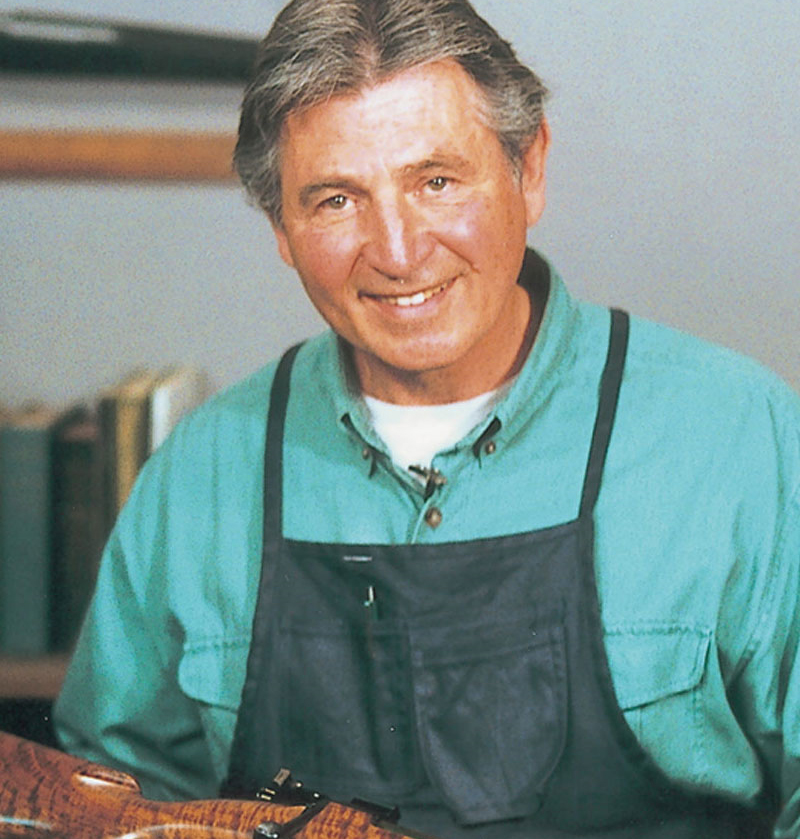
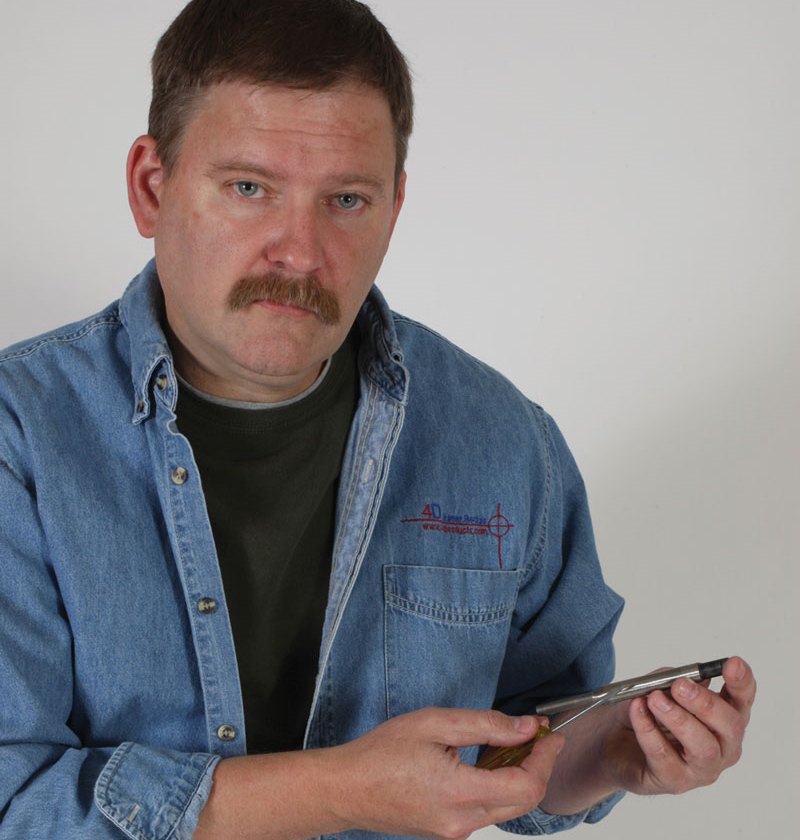
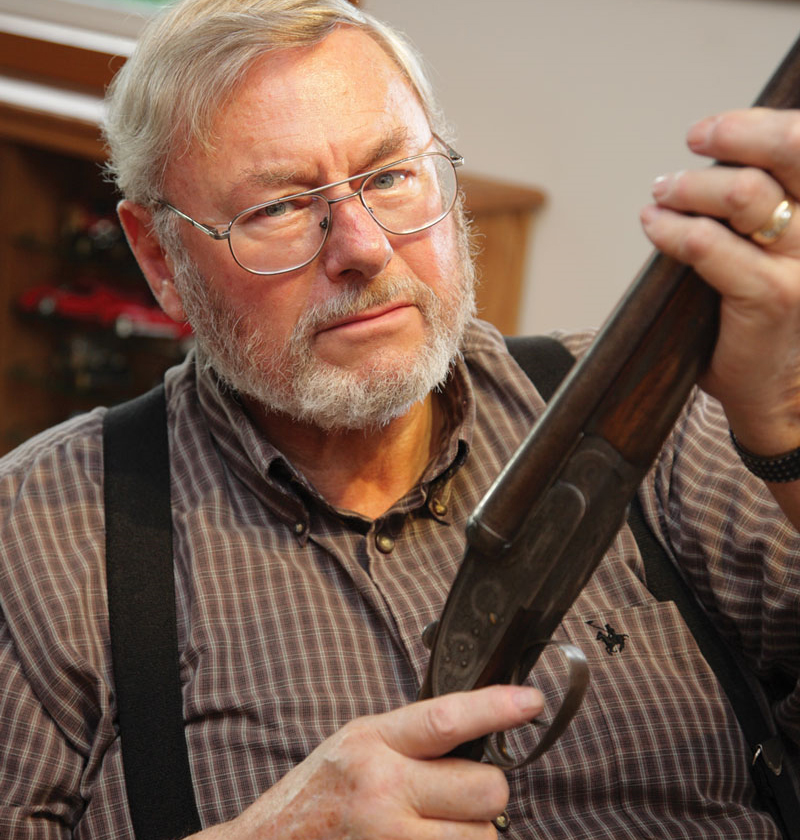
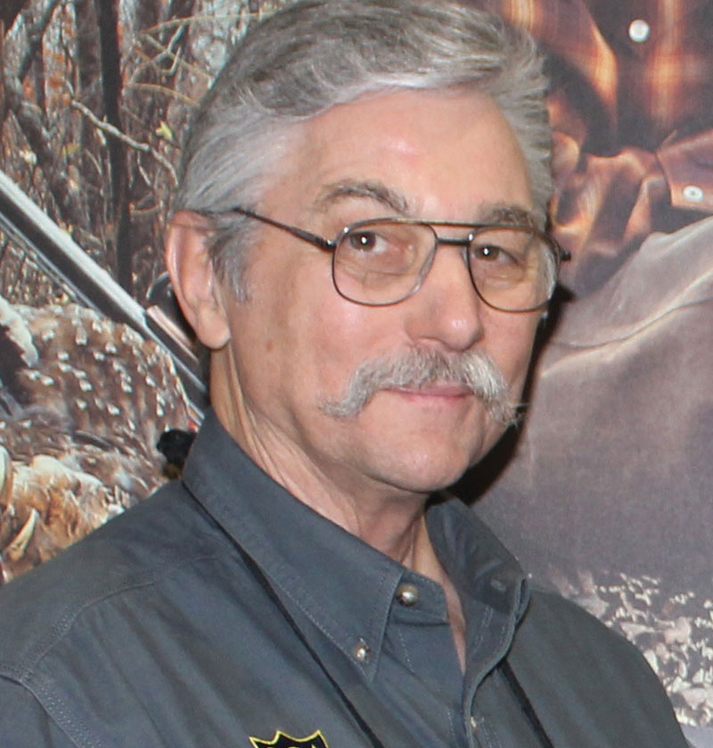

GENE KELLY
Ken Brooks
Senior Instructor
A graduate of and former instructor at the gunsmithing program at Lassen College, Ken worked full time with Bob Dunlap at his shop as a professional gunsmith in Coquille, Oregon before taking over the reins when Bob retired. Ken is a Senior Instructor teaching the design, function and repair system AGI is renowned for. He is a master at video Disassembly/Reassembly and he has also done over 200 D/Rs and Armorer’s Courses along with hosting on-going technical classes for AGI gunsmithing students.

Darrell Holland
Senior Instructor
Mr. Holland is well known as a custom rifle builder, writer, and lecturer. He builds some of the tightest shooting custom rifles in existence. Darrell is always inventing new performance shooting products and is constantly pushing the envelope with regards to integrating the latest technology and ideas into his rifle designs to increase accuracy and improve reliability. Darrell is a Master Machinist and instructs the AGI Machine Shop Course. He has also instructed many other courses for AGI which take advantage of his unsurpassed knowledge and expertise in optics, accurizing, hunting, and machining. His simple, direct instructional style makes learning any subject easy and his attention to detail is legendary. He enjoys teaching and has taught gunsmithing and marksmanship courses internationally. Even the most experienced shooters and gunsmiths learn from his courses.
John Bush
Master Armorer
Mr. John Bush is a Master Armorer and has a long and colorful connection with firearms. He is constantly traveling as a consultant to manufacturers and importers of military firearms, and is certified as an expert witness in firearm cases. John has instructed numerous AGI courses including building classic military style firearms from parts kits.

Gene Shuey
Competetive Shooter
Gene Shuey is a former world class competitive shooter, custom pistolsmith, and trainer. A Master Gunsmith specializing in 1911 and Glock pistols, IPSC limited and open class guns, and high end classic custom rifles, Mr. Shuey has contributed extensively to AGI's instructional gunsmithing courses. Gene is featured throughout the Professional Course and has instructed numerous AGI courses on customizing and building firearms.
Mark Foster
Master Armorer
Mark also graduated from the Lassen College Gunsmithing program where he studied with Gene Kelly and Darrell Holland under Bob Dunlap. Mr. Foster has over 40+ years of gunsmithing experience and is a 40+ year veteran of the Sheriff’s Department where he was the Chief Armorer and a Firearms Training Officer.

Fred Zeglin
Custom Rifle Builder
Fred has published numerous books which include, "Hawk Cartridges Manual," “PO Ackley, America’s Gunsmith,” and "Wildcat Cartridges, Reloader's Handbook of Wildcat Cartridge Design." Fred is an expert on wildcat cartridges and a well-known builder of high end custom hunting rifles. He currently operates 4D Reamer Rentals LTD, specializing in rentals of gunsmithing tools to the trade and hobbyists.
Keith Hezmalhalch
Producer
Keith started down the path to becoming a producer when he shot and edited his first film in high school. He entered the Telecommunications Program at college and after graduating worked for several years as an engineer in broadcast television before returning to the same college to teach. He left teaching to start Kaleidoscope Productions in 1984 and in 1993 began a collaborative effort with Gene Kelly to produce low cost, high quality, instructional videos. Keith has been instrumental in the development and production of AGI gunsmithing courses, as well as being the producer of GCA’s monthly video magazine GunTech.
Robert Dunn
Videographer
Robert Dunn first began his AGI experience as an AGI student, investing in Armorer’s Courses and then the Master Gunsmithing Course. After spending 25 years in the music industry, Robert sent AGI a resume and was later asked to “try out” for a videographer position.
IN MEMORIAM

Robert “Bob” Dunlap
Senior Instructor - Master Gunsmith
AGI Instructor Emeritus, Master Gunsmith Robert "Bob" Dunlap was recognized nationally as the top instructor in his field and was an expert witness in firearms court cases. His unique and personally developed Design, Function, and Repair system is at the core of AGI’s Professional and Consumer courses. He also extensively contributed his knowledge and expertise to the GCA for over a decade. Throughout his career as a state accredited college gunsmithing instructor Bob also ran a fully staffed gunsmithing shop which did warranty work for Colt, Smith & Wesson, Charter Arms, Hi-Standard, Remington, Browning, Winchester and numerous other well known manufacturers. Bob has been personally responsible for the repair of well over 250,000 guns. At the Gunsmithing Club of America and American Gunsmithing Institute we work to carry on Bob's legacy teaching Design, Function, & Repair, and growing current and future generations of gunsmiths and firearms enthusiasts.
